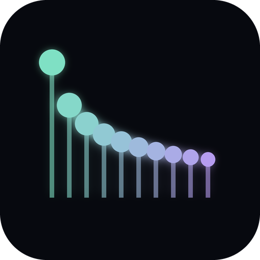
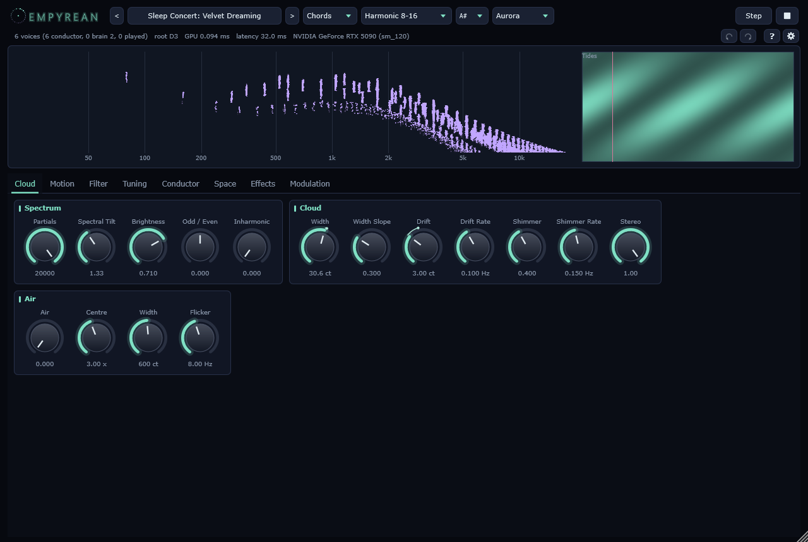
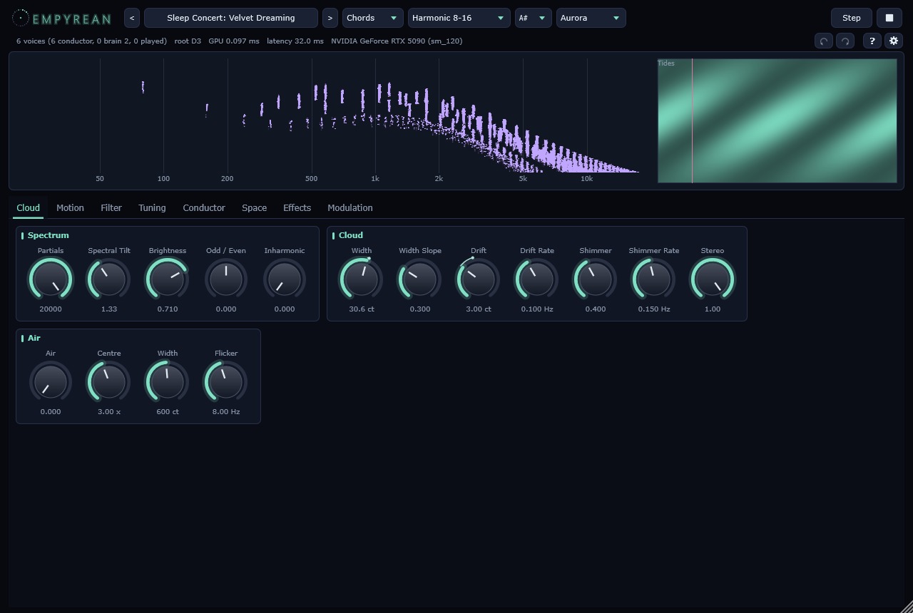
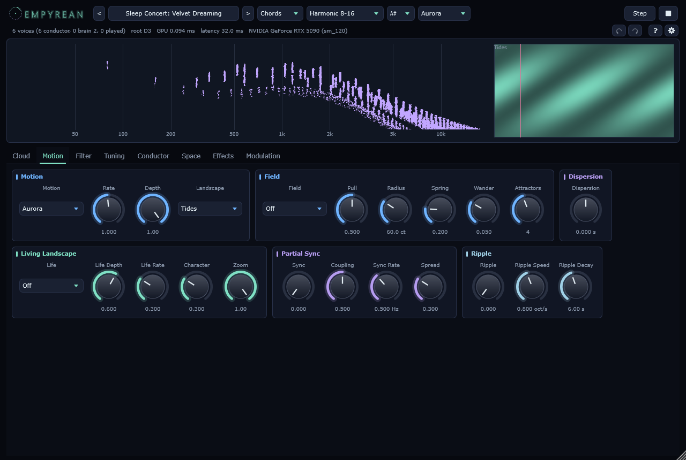
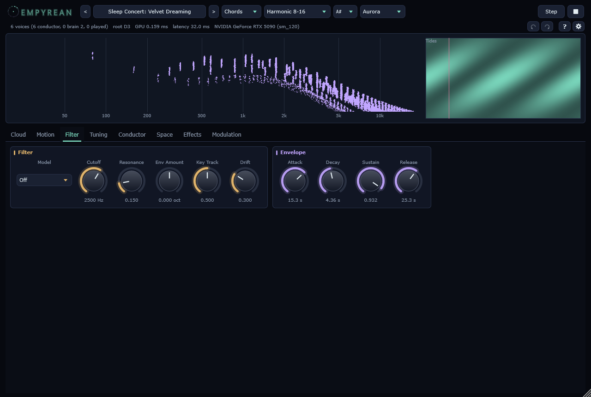
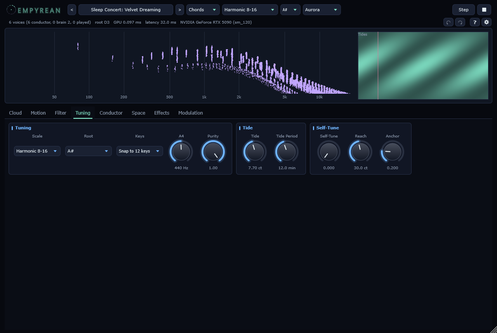
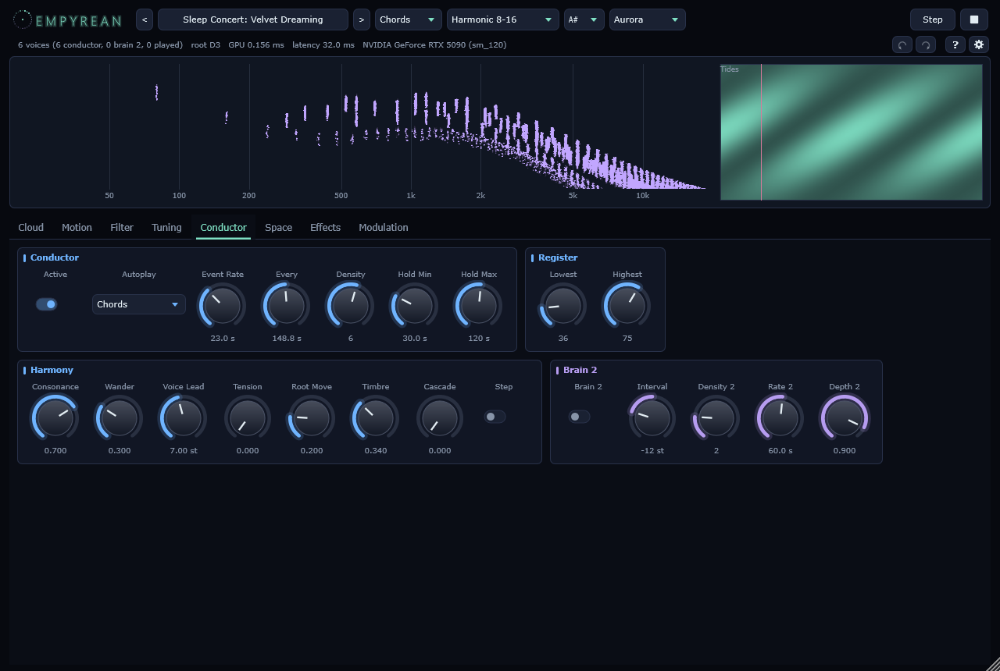
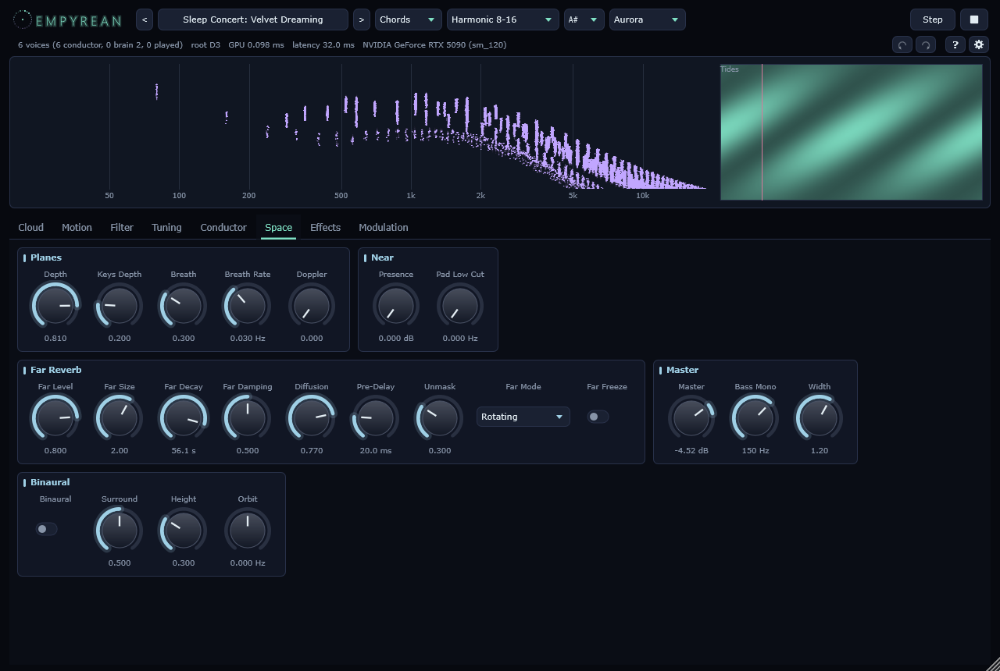
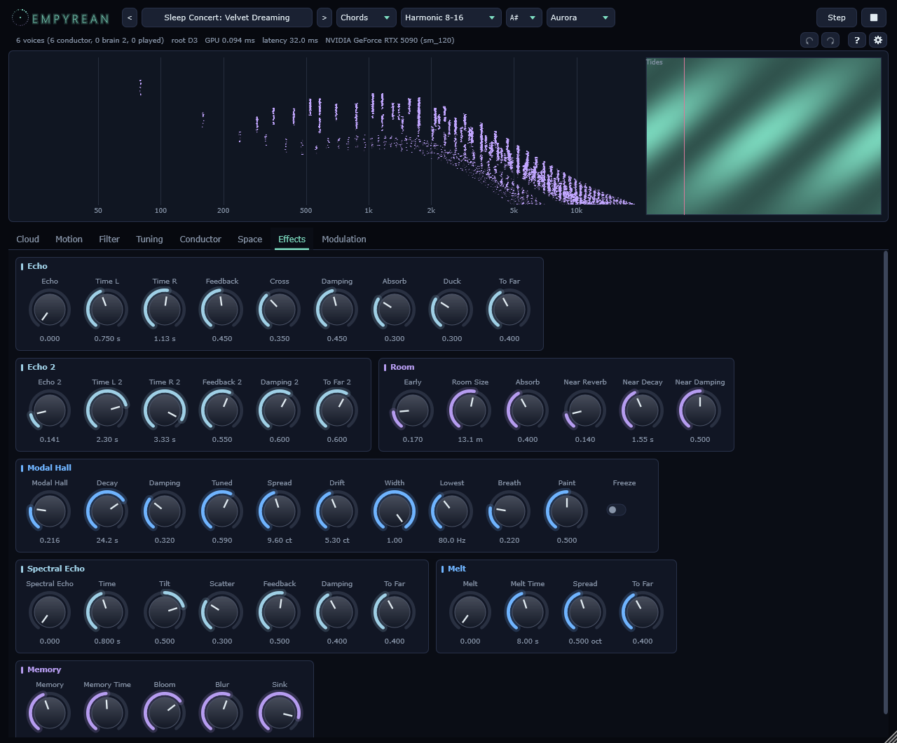
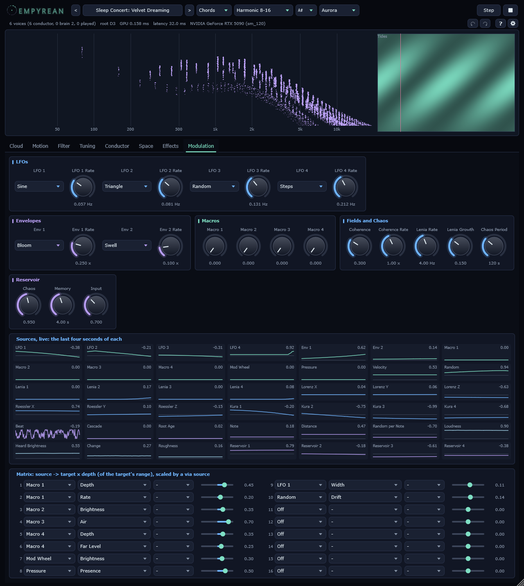

EMPYREAN
An additive ambient synthesizer: twenty thousand partials per voice, on the graphics card
Version 0.10.0 · 176 parameters · 2048 presets · manual built 12.10.2026

The instrument
An additive ambient synthesizer: every voice is twenty thousand sine waves, computed on the graphics card. Each harmonic of a note is not one sine but a cloud of slightly detuned ones, every partial with its own slow drift, its own shimmer and its own place in the stereo field.
It plays by itself or under your hands. The conductor (Autoplay) is Noctuary's: a chord in just intonation that changes one voice at a time, minutes apart, in the spirit of Robert Rich's sleep concerts. Press Play in the header (or Space in the standalone) to start or stop it; play the keyboard over it, or switch it off and play alone.
The picture under the header shows the partials themselves, as the graphics card has them this moment: every eighth partial of every voice a point, its frequency across, its loudness up, leaving a trail that fades -- so you see each harmonic's cloud, and every partial rising, falling and wandering as the motions, the field and the landscapes move it. Green for what you play, violet for the conductor, pale blue for the second conductor, pale grey for the ghosts of the memory. On the right, the landscape the Aurora motion reads, with a line where the voices are in its loop.
The cloud

Spectrum shapes the harmonics: Tilt makes the upper ones fall away, Brightness closes a window over them, Odd / Even thins one kind, Inharmonic stretches them as a stiff string does. The voice keeps its level whatever the shape: these colour the sound, they do not make it louder.
Cloud sets how wide each harmonic's cloud is (in cents, and how it widens towards the top), how far every partial drifts in pitch and how far its level shimmers, and how far the partials scatter across the stereo field. Purity (Tuning) narrows the clouds too, so that just intervals can lock.
Air adds a band of noise made of partials around a multiple of the fundamental: Centre, Width and Flicker (how fast its partials quiver -- which is what makes them heard as noise).
Cloud
| Control | Key | Range | Default |
|---|
| Partials | partials | 200 .. 20000 | 20000 |
| Spectral Tilt | tilt | 0.3 .. 3 | 1.2 |
| Brightness | brightness | 0 .. 1 | 1 |
| Odd / Even | odd_even | -1 .. 1 | 0 |
| Inharmonic | inharmonic | 0 .. 1 | 0 |
| Width | cloud_width | 0 .. 100 ct | 25 ct |
| Width Slope | width_slope | 0 .. 1 | 0.3 |
| Drift | drift | 0 .. 30 ct | 3 ct |
| Drift Rate | drift_rate | 0.01 .. 2 Hz | 0.1 Hz |
| Shimmer | shimmer | 0 .. 1 | 0.4 |
| Shimmer Rate | shimmer_rate | 0.01 .. 2 Hz | 0.15 Hz |
| Stereo | stereo | 0 .. 1 | 1 |
Air
| Control | Key | Range | Default |
|---|
| Air | air | 0 .. 1 | 0 |
| Centre | air_center | 1 .. 12 x | 3 x |
| Width | air_width | 50 .. 2400 ct | 600 ct |
| Flicker | air_jitter | 0.5 .. 40 Hz | 8 Hz |
Motion and landscapes

Every partial has envelopes of its own, on three lanes: loudness, pitch and place. A motion sets them all at once: Random (every partial for itself, a fine glitter), Wave (a wave climbing through the spectrum), Pendulum (each harmonic pulses a little faster than the one below, over a bass that stays), Breathe (loudness, place and pitch travel through each cloud), Glissando (every partial glides into its note from up to fifteen semitones away), Aurora (the partials read a landscape).
A landscape is time against frequency: every partial reads the column at its own frequency. Aurora, Shepard (bands climbing for ever), Tides, Rain (short glints) and Choir (the formants of u-o-a-e-i, the vowel turning slowly). Rate and Depth scale whatever the motion does; Depth 0 leaves the bare cloud.
The field moves the partials as a whole, on top of any motion. Scale pulls every partial towards the nearest pitch of the scale: a wide or stretched cloud gathers into the key and keeps only a narrow shimmer. Swarm lets a few attractors (Attractors) wander through the spectrum on chaotic paths (Wander is how fast) and gathers the partials within their reach (Radius); Scatter pushes the partials away from them instead, gaps moving through the sound like dust parted by a wind. Flock makes every cloud a flock of starlings: each partial keeps to its neighbours' place and pace without coming closer to them than half the distance they keep at rest, and a wind of its own blows each cloud about, so the partials swirl, bunch and spread around their harmonic. Pull is how fast the partials may move, Spring how strongly they are drawn back to their own places. The partials keep their own phases while they gather, so the level stays.
The living landscape is a field that lives on the graphics card while you listen, and every partial reads it at its frequency (across) and its place in its cloud (along), so each harmonic is a slice through the living pattern. Lenia is Conway's Life made continuous: creatures that drift, pulse, split and die. Turing is Gray-Scott reaction-diffusion, the chemistry behind a leopard's spots: Character leads it from spots through dividing cells, coral and worms to mazes (for Lenia it sets the growth). Life Rate is how fast it lives, Life Depth how far the partials follow it, Zoom how much of its width the spectrum spans. A field that dies or fills up is seeded again; the level is kept from the field's own measure. While it lives, the panel beside the picture shows it.
Partial Sync gives every partial a slow oscillator of its own, which moves its loudness (Sync), at a rate scattered around Sync Rate by Spread. Coupling pulls the members of each harmonic towards their common phase -- the mathematics of fireflies falling into step. Loosely coupled, each partial flickers for itself and the flickering averages away; past a critical strength they lock, and the whole cloud of a harmonic pulses as one. Turn Coupling slowly and you hear a crowd find its rhythm.
Ripple stretches a string along the spectrum. Every new note strikes it at its harmonics, and the ripples run up and down the spectrum (Ripple Speed, in octaves a second), reflect at its ends, cross each other and die away (Ripple Decay); every partial's loudness rides the wave where it stands (Ripple). A chord change sends a shiver through everything that sounds.
Dispersion makes each partial's clock late by its pitch. Positive, the low ones run up to that many seconds late: an attack or a glint falls from the top as a cascade, like a drop on ice. Negative, the high ones are late and it rises. On a held sound it is heard where the sound changes: attacks, releases, the glints of the landscapes.
Motion
| Control | Key | Range | Default |
|---|
| Motion | motion | None, Random, Wave, Pendulum, Breathe, Glissando, Aurora | Breathe |
| Rate | motion_rate | 0.1 .. 4 | 1 |
| Depth | motion_depth | 0 .. 1 | 1 |
| Landscape | landscape | Aurora, Shepard, Tides, Rain, Choir | Aurora |
| Dispersion | dispersion | -1.5 .. 1.5 s | 0 s |
Field
| Control | Key | Range | Default |
|---|
| Field | field_mode | Off, Scale, Swarm, Scatter, Flock | Off |
| Pull | field_strength | 0 .. 1 | 0.5 |
| Radius | field_radius | 5 .. 600 ct | 60 ct |
| Spring | field_spring | 0 .. 1 | 0.2 |
| Wander | field_rate | 0.005 .. 1 | 0.05 |
| Attractors | field_count | 1 .. 8 | 4 |
Life
| Control | Key | Range | Default |
|---|
| Life | life_mode | Off, Lenia, Turing | Off |
| Life Depth | life_depth | 0 .. 1 | 0.6 |
| Life Rate | life_rate | 0 .. 1 | 0.3 |
| Character | life_character | 0 .. 1 | 0.3 |
| Zoom | life_zoom | 0.25 .. 1 | 1 |
Sync
| Control | Key | Range | Default |
|---|
| Sync | sync_depth | 0 .. 1 | 0 |
| Coupling | sync_coupling | 0 .. 1 | 0.5 |
| Sync Rate | sync_rate | 0.05 .. 6 Hz | 0.5 Hz |
| Spread | sync_spread | 0 .. 1 | 0.3 |
Ripple
| Control | Key | Range | Default |
|---|
| Ripple | ripple_depth | 0 .. 1 | 0 |
| Ripple Speed | ripple_speed | 0.1 .. 4 oct/s | 0.8 oct/s |
| Ripple Decay | ripple_decay | 0.5 .. 30 s | 6 s |
Filter and envelope

The filter is read as a frequency response at every partial: LP 6, LP 12, LP 24, HP 12, BP 12, Notch, Peak and Formant (whose cutoff picks the vowel). Env Amount moves the cutoff with the voice's envelope, in octaves; Key Track follows the note; Drift lets the cutoff wander on its own. MIDI controller 74 moves the cutoff.
The envelope is every voice's: Attack, Decay, Sustain, Release, in seconds to minutes.
Filter
| Control | Key | Range | Default |
|---|
| Model | filter_model | Off, LP 6, LP 12, LP 24, HP 12, BP 12, Notch, Peak, Formant | Off |
| Cutoff | cutoff | 40 .. 18000 Hz | 2500 Hz |
| Resonance | resonance | 0 .. 1 | 0.15 |
| Env Amount | filter_env | -4 .. 4 oct | 0 oct |
| Key Track | keytrack | 0 .. 1 | 0.5 |
| Drift | filter_drift | 0 .. 1 | 0.3 |
Envelope
| Control | Key | Range | Default |
|---|
| Attack | attack | 0.01 .. 60 s | 6 s |
| Decay | decay | 0.01 .. 60 s | 4 s |
| Sustain | sustain | 0 .. 1 | 1 |
| Release | release | 0.05 .. 120 s | 12 s |
Tuning

Scale chooses the tuning: equal temperament, the just scales, the harmonic series, slendro, Bohlen-Pierce, or Timbre -- the scale the cloud's own spectrum asks for (Sethares). Root is its tonic; Keys maps the keyboard (snapped to twelve keys, or one key per degree). Purity blends equal temperament (0) with the scale (1). Tide leans the whole instrument by a few cents on a curve of minutes.
Self-Tune lets a chord tune itself. Where a harmonic of one voice nearly meets a harmonic of another (within Reach), the two voices pull together until they no longer beat: an equal-tempered major third settles to a pure one within seconds, and gives way again when the chord changes. Anchor draws every voice back towards its pitch in the scale.
Tuning
| Control | Key | Range | Default |
|---|
| Scale | scale | 12-TET, JI Major (Ptolemy), JI Minor, JI 7-limit, Pythagorean, JI Pentatonic, Harmonic 8-16, Subharmonic 16-8, Slendro (JI), Bohlen-Pierce (JI), Otonality 1-11, User (Scala), Timbre (Sethares) | JI 7-limit |
| Root | root | C, C#, D, D#, E, F, F#, G, G#, A, A#, B | D |
| Keys | keymap | Snap to 12 keys, Consecutive degrees | Snap to 12 keys |
| A4 | ref_pitch | 415 .. 466 Hz | 440 Hz |
| Purity | purity | 0 .. 1 | 1 |
| Tide | tide | 0 .. 30 ct | 0 ct |
| Tide Period | tide_period | 1 .. 60 min | 12 min |
| Self-Tune | tune_gravity | 0 .. 1 | 0 |
| Reach | tune_reach | 5 .. 60 ct | 30 ct |
| Anchor | tune_anchor | 0 .. 1 | 0.2 |
The conductor

Free lets notes come and go on their own timers. Chords (Autoplay) keeps the chord full and exchanges one voice at a time, every so many seconds (Every) or now (Step): the new note is the one that sits best against the voices that stay, within Voice Lead semitones. Tension allows notes that lean; Root Move lets the harmony travel. Timbre judges consonance from the cloud's own spectrum.
Brain 2 is a second conductor in the background: its root follows the first one's plus Interval, it plays slowly (Rate 2), few notes (Density 2), deep in the space (Depth 2).
Conductor
| Control | Key | Range | Default |
|---|
| Active | brain_on | off / on | on |
| Autoplay | auto_mode | Free, Chords | Chords |
| Event Rate | brain_rate | 2 .. 300 s | 25 s |
| Every | auto_rate | 2 .. 900 s | 45 s |
| Density | brain_density | 1 .. 10 | 5 |
| Hold Min | brain_hold_min | 5 .. 600 s | 30 s |
| Hold Max | brain_hold_max | 5 .. 600 s | 120 s |
| Lowest | brain_low | 24 .. 96 | 36 |
| Highest | brain_high | 24 .. 108 | 79 |
| Consonance | brain_consonance | 0 .. 1 | 0.7 |
| Wander | brain_wander | 0 .. 1 | 0.3 |
| Voice Lead | auto_lead | 1 .. 24 st | 7 st |
| Tension | auto_tension | 0 .. 1 | 0 |
| Root Move | auto_root_move | 0 .. 1 | 0.2 |
| Timbre | brain_timbre | 0 .. 1 | 0 |
| Step | auto_step | off / on | off |
| Brain 2 | brain2_on | off / on | off |
| Interval | brain2_interval | -24 .. 24 st | -12 st |
| Density 2 | brain2_density | 1 .. 6 | 2 |
| Rate 2 | brain2_rate | 2 .. 300 s | 60 s |
| Depth 2 | brain2_depth | 0 .. 1 | 0.9 |
| Cascade | brain_cascade | 0 .. 1 | 0 |
Space

Every note stands on a plane between the ear (0) and the far background (1): the conductor puts some notes near and most deep (Depth), played notes stand at Keys Depth. A far note is quieter, darker and heard only through the far reverb. Breath lets every voice's plane wander; Doppler raises a voice that comes closer. Presence lifts the 2-5 kHz band on the near plane; Pad Low Cut leaves the bottom free.
The far reverb (Level, Size, Decay, Damping) is Noctuary's, with its Diffusion (the swell before the hall), Pre-Delay, Unmask (the hall steps aside, band by band, wherever the near plane sounds), its four networks (Far Mode: Colourless rings least, Rotating lets the tail drift) and Freeze.
Binaural (for headphones) places every partial of the near plane at a point of its own round the head: the head's shadow, the folds of the ear and the time the sound takes round the head, worked out for each partial at its own frequency. Surround spreads the places from the front half to all round, Height lifts and lowers them, Orbit turns the whole cloud round the listener. The far plane stays as it was, heard through the far reverb; the master's width and mono bass step aside while Binaural is on. Master: the level, the bass made mono below Bass Mono, and the width.
Space
| Control | Key | Range | Default |
|---|
| Depth | depth | 0 .. 1 | 0.6 |
| Keys Depth | keys_depth | 0 .. 1 | 0.2 |
| Far Level | far_level | 0 .. 1 | 0.8 |
| Far Size | far_size | 0.5 .. 3 | 2 |
| Far Decay | far_decay | 1 .. 90 s | 25 s |
| Far Damping | far_damp | 0 .. 1 | 0.5 |
| Presence | presence | 0 .. 6 dB | 0 dB |
| Pad Low Cut | pad_low_cut | 0 .. 300 Hz | 0 Hz |
| Breath | breath | 0 .. 1 | 0 |
| Breath Rate | breath_rate | 0.005 .. 0.2 Hz | 0.03 Hz |
| Doppler | doppler | 0 .. 1 | 0 |
| Diffusion | far_diffuse | 0 .. 1 | 0.5 |
| Pre-Delay | far_predelay | 0 .. 500 ms | 20 ms |
| Unmask | far_unmask | 0 .. 1 | 0.3 |
| Far Mode | far_mode | Classic, Scattering, Colourless, Rotating | Colourless |
| Far Freeze | far_freeze | off / on | off |
Master
| Control | Key | Range | Default |
|---|
| Master | master_gain | -40 .. 12 dB | 0 dB |
| Bass Mono | bass_mono | 40 .. 300 Hz | 150 Hz |
| Width | stereo_width | 0 .. 2 | 1.2 |
Binaural
| Control | Key | Range | Default |
|---|
| Binaural | binaural | off / on | off |
| Surround | binaural_span | 0 .. 1 | 0.5 |
| Height | binaural_height | 0 .. 1 | 0.3 |
| Orbit | binaural_orbit | -0.5 .. 0.5 Hz | 0 Hz |
Echoes, rooms and the modal hall

Echo is Noctuary's: two delays whose times glide and wander, a little different in each ear. Cross takes each side's feedback partly from the other, Damping darkens the loop, Absorb narrows it to a band as the feedback rises (so long echoes drown in fog instead of merely getting quieter), and Duck darkens it while the voices are loud, so a new note does not have to fight the last one's tail. To Far sends the echoes into the far plane, where they recede into the far reverb. Echo 2 runs after the first and hears its echoes: longer chains.
Room gives the near plane a place to stand: the early reflections of a room (Room Size, Absorb), arriving from where the voices stand, and a small reverb (Near Reverb, Near Decay, Near Damping).
The modal hall is a reverb made the way the instrument is made: sixty-five thousand resonances on the graphics card, each a sine that dies away, woken by everything the voices play. Decay is the time it takes to fall silent (60 dB) in the low range; Damping lets the upper octaves die sooner. Tuned puts that share of the resonances on the pitches of the scale, and Spread scatters them a few cents around their notes: with Tuned up, the hall rings in key, like the sympathetic strings of a viola d'amore, and retunes without a click when the scale or its root changes. Drift lets every resonance wander by a few cents, Width gives each its own place in each ear, Lowest keeps the bottom free. Breath lets every resonance's decay wander slowly, so the hall's colour moves while it rings. Paint lets the hall be heard through the landscape: its resonances light up where the landscape is bright, so the tail draws the aurora, the rain, the tides. Freeze holds the hall as it is, its input shut: a chord left hanging in the air.
The spectral echo takes the sound apart into five hundred bands and gives each a delay line of its own. Tilt brings the high bands back later than the low ones (or earlier), Scatter gives every band a time of its own, Feedback and Damping set how long and how dark the repeats are, To Far how much of them recedes. An attack comes back as a cascade, a chord as a spreading shimmer.
The melt holds the sound's spectrum and lets it melt: two thousand bands, each keeping what it heard and fading over Melt Time, while the held spectrum slowly flows into its neighbours (Spread: how many octaves it has spread after a second). What has been held longest is spread widest, so a chord leaves a glow that widens into the space between its notes. A phase vocoder sings it again, each band at the frequency it heard, drawn towards its own pitch as it melts, a little apart in each ear. To Far sends it into the far plane.
Memory keeps a ghost of every note let go. It rises over Bloom once the note has gone, fades over Memory Time, and while it fades it widens, drifts and darkens (Blur) and recedes into the far plane (Sink): the harmony of the last minutes stands faintly behind the present one.
Echo
| Control | Key | Range | Default |
|---|
| Echo | delay_mix | 0 .. 1 | 0 |
| Time L | delay_time_l | 0.02 .. 4 s | 0.75 s |
| Time R | delay_time_r | 0.02 .. 4 s | 1.13 s |
| Feedback | delay_feedback | 0 .. 0.95 | 0.45 |
| Cross | delay_cross | 0 .. 1 | 0.35 |
| Damping | delay_damp | 0 .. 1 | 0.45 |
| Absorb | delay_absorb | 0 .. 1 | 0.3 |
| Duck | delay_duck | 0 .. 1 | 0.3 |
| To Far | delay_to_far | 0 .. 1 | 0.4 |
| Echo 2 | delay2_mix | 0 .. 1 | 0 |
| Time L 2 | delay2_time_l | 0.05 .. 4 s | 2.4 s |
| Time R 2 | delay2_time_r | 0.05 .. 4 s | 3.1 s |
| Feedback 2 | delay2_feedback | 0 .. 0.95 | 0.55 |
| Damping 2 | delay2_damp | 0 .. 1 | 0.6 |
| To Far 2 | delay2_to_far | 0 .. 1 | 0.6 |
Room
| Control | Key | Range | Default |
|---|
| Early | early_level | 0 .. 1 | 0.2 |
| Room Size | early_size | 2 .. 40 m | 14 m |
| Absorb | early_absorb | 0 .. 1 | 0.4 |
| Near Reverb | near_mix | 0 .. 1 | 0.1 |
| Near Decay | near_decay | 0.2 .. 8 s | 1.8 s |
| Near Damping | near_damp | 0 .. 1 | 0.5 |
Modal
| Control | Key | Range | Default |
|---|
| Modal Hall | modal_level | 0 .. 1 | 0 |
| Decay | modal_decay | 0.5 .. 60 s | 8 s |
| Damping | modal_damp | 0 .. 1 | 0.35 |
| Tuned | modal_tune | 0 .. 1 | 0.5 |
| Spread | modal_spread | 0 .. 50 ct | 6 ct |
| Drift | modal_drift | 0 .. 30 ct | 4 ct |
| Width | modal_width | 0 .. 1 | 1 |
| Lowest | modal_low | 30 .. 400 Hz | 80 Hz |
| Freeze | modal_freeze | off / on | off |
| Breath | modal_breath | 0 .. 1 | 0 |
| Paint | modal_paint | 0 .. 1 | 0 |
Spectral Echo
| Control | Key | Range | Default |
|---|
| Spectral Echo | spec_mix | 0 .. 1 | 0 |
| Time | spec_time | 0.05 .. 4 s | 0.8 s |
| Tilt | spec_tilt | -1 .. 1 | 0.5 |
| Scatter | spec_scatter | 0 .. 1 | 0.3 |
| Feedback | spec_feedback | 0 .. 0.95 | 0.5 |
| Damping | spec_damp | 0 .. 1 | 0.4 |
| To Far | spec_to_far | 0 .. 1 | 0.4 |
Melt
| Control | Key | Range | Default |
|---|
| Melt | melt_mix | 0 .. 1 | 0 |
| Melt Time | melt_time | 0.5 .. 60 s | 8 s |
| Spread | melt_spread | 0 .. 2 oct | 0.5 oct |
| To Far | melt_to_far | 0 .. 1 | 0.4 |
Memory
| Control | Key | Range | Default |
|---|
| Memory | memory_level | 0 .. 1 | 0 |
| Memory Time | memory_time | 10 .. 300 s | 60 s |
| Bloom | memory_bloom | 0.2 .. 20 s | 4 s |
| Blur | memory_blur | 0 .. 1 | 0.5 |
| Sink | memory_sink | 0 .. 1 | 0.6 |
Modulation

Four LFOs, two envelopes and four macros move the instrument's knobs through a matrix of sixteen rows: a source, a target, a depth. The LFOs are slow by default (their rates step by the golden ratio, so they never line up) and have no hard edges: Square and Ramp glide through their jumps in a few percent of a cycle, Random is a drifting curve, Steps glides from one value to the next. The envelopes are shapes from the motions' bank, played from the start whenever a note arrives into silence; Rate sets how fast they run.
The macros are knobs without a place of their own: they mean what the matrix says. Every factory preset gives them the same meaning, so that a controller mapped to them plays every preset: Macro 1 the motion (Depth and Rate), Macro 2 the brightness or the filter, Macro 3 the air, Macro 4 the depth in the space. The mod wheel, channel pressure, the velocity of the last note and a slow random curve are sources too.
Depth is measured in the knob's own travel: 0.5 moves a knob by half its range up and down, whatever its unit. A knob that is modulated shows a ring around it where its value is now.
Fields and chaos are Noctuary's. Lenia is a living field -- Conway's Life made continuous -- whose blobs drift, pulse, split and die, read at four places (Lenia Rate, Lenia Growth). Lorenz and Roessler are two strange attractors, never the same path twice (Chaos Period). Kura 1-4 are four slow oscillators coupled by Coherence: free at 0, falling into step towards 1, never quite as one. Three come from the piece itself: the Beat runs at the rate the lowest interval beats -- still when it is pure, quicker the further out of tune it drifts -- Cascade swells with the conductor's excitement (Cascade on the Conductor page lets its events breed events), Root Age climbs over ten minutes since the root last moved. Note, Distance and Random per Note follow the loudest voice and the last note.
Four sources are what the instrument hears of itself: Loudness, Heard Brightness (where its energy stands), Change (how fast its spectrum moves) and Roughness (how much its chord grinds, by Sethares' measure of how its voices' harmonics rub). Route them back into the sound and it regulates itself: roughness into Self-Tune, and the rougher it gets the harder it tunes; loudness against the far level, and it recedes when it swells.
The reservoir is a small network of 2048 neurons on the graphics card, coupled at random, listening to what the instrument hears and plays (its loudness, brightness, change and roughness, the Beat, the note, the conductor's excitement, Lenia) -- each measured against its last half minute, so it hears what changes. Its four readouts, Reservoir 1-4, are smooth curves that never repeat and remember what was played. Chaos is how strongly its neurons drive each other: below 1 it forgets and follows the music, about 1 it rings on at the edge of chaos, above it runs on by itself. Memory is how slowly it moves, Input how closely it listens. It is only computed while a row of the matrix reads it.
Above the matrix every source draws its last four seconds, live, coloured by its kind: the LFOs, envelopes, macros and the keyboard's; fields and chaos; the piece; what the instrument hears; the reservoir. So you can see which one breathes slowly, which one jumps and which one listens before you route it. While the window is open the reservoir runs even when no row reads it.
Every row of the matrix can have a via source: the depth is scaled by its amount, 0 to 1 -- an LFO that only moves the filter as far as the mod wheel allows, a Lorenz wander that opens with Root Age.
Modulation
| Control | Key | Range | Default |
|---|
| LFO 1 | lfo1_shape | Sine, Triangle, Ramp Up, Ramp Down, Square, Random, Steps | Sine |
| LFO 1 Rate | lfo1_rate | 0.001 .. 20 Hz | 0.05 Hz |
| LFO 2 | lfo2_shape | Sine, Triangle, Ramp Up, Ramp Down, Square, Random, Steps | Triangle |
| LFO 2 Rate | lfo2_rate | 0.001 .. 20 Hz | 0.0809 Hz |
| LFO 3 | lfo3_shape | Sine, Triangle, Ramp Up, Ramp Down, Square, Random, Steps | Random |
| LFO 3 Rate | lfo3_rate | 0.001 .. 20 Hz | 0.1309 Hz |
| LFO 4 | lfo4_shape | Sine, Triangle, Ramp Up, Ramp Down, Square, Random, Steps | Steps |
| LFO 4 Rate | lfo4_rate | 0.001 .. 20 Hz | 0.2118 Hz |
| Env 1 | env1_shape | Swell, Pulse, Bloom, Flicker, Wobble, Rise In, Fall In, Saw Up | Bloom |
| Env 1 Rate | env1_rate | 0.02 .. 8 x | 0.25 x |
| Env 2 | env2_shape | Swell, Pulse, Bloom, Flicker, Wobble, Rise In, Fall In, Saw Up | Swell |
| Env 2 Rate | env2_rate | 0.02 .. 8 x | 0.1 x |
| Macro 1 | macro1 | 0 .. 1 | 0 |
| Macro 2 | macro2 | 0 .. 1 | 0 |
| Macro 3 | macro3 | 0 .. 1 | 0 |
| Macro 4 | macro4 | 0 .. 1 | 0 |
| Coherence | coherence | 0 .. 1 | 0.3 |
| Coherence Rate | coherence_rate | 0.2 .. 5 x | 1 x |
| Lenia Rate | lenia_rate | 0.5 .. 20 Hz | 4 Hz |
| Lenia Growth | lenia_growth | 0.08 .. 0.3 | 0.15 |
| Chaos Period | chaos_period | 10 .. 1800 s | 120 s |
| Chaos | reservoir_chaos | 0.5 .. 1.5 | 0.95 |
| Memory | reservoir_memory | 0.3 .. 30 s | 4 s |
| Input | reservoir_input | 0 .. 2 | 0.7 |
Presets
The bank holds 2048 presets in 32 groups of 64. Sixteen groups of sounds: Sleep Concert, Choirs, Glass, Bells, Strings, Organs, Air & Noise, Deep Space, Glissandi, Pendulums, Waves, Shepard & Tides, Shimmer, Dark Drones, Microtonal and Keys. Sixteen of living systems, each starting from one of those sounds and putting one system in front: Living Fields and Turing Gardens (the living landscape), Synchrony, Flocks, Ripples, Melting Spectra, Spectral Cascades, Resonant Halls (the modal hall), Ghosts & Memory, Strange Attractors, Reservoir Minds, Self-Listening (what it hears), Gravity Wells (the field), Smear & Dispersion, Lattices & Beats and Night Gardens. The arrows in the header step through them; a click on the name opens the list by group. Every preset was measured by its loudest second and brought to the same level, so stepping through them does not jump.
MIDI program change chooses a preset within the group that bank select (controller 0) names. A preset sets every knob and the matrix; your MIDI-learn bindings stay.
Family jam and headset
The instruments of the family (Noctuary, Ephemeris, Phosphene, Totality, Parhelion and this one) can play together on one computer or a local network: Settings > Family jam. A follower keeps its conductor's root on the leader's (the nearest note of that pitch class, in its own tuning) and opens or closes with the energy of the leader's section; a leader tells the others its root and scale.
The Meta Quest app has no graphics card to compute twenty thousand partials per voice, so the instrument stays on this computer and the headset sends only its hands (bridge mode): Settings > Headset. The left hand's height is the brightness (Macro 2), the right hand's the motion (Macro 1); the pinches play and stop the conductor, step it, bring Brain 2 in and out, and both hands pinched choose the next preset.
Playing
The keyboard plays over the conductor. The hold pedal (controller 64) keeps notes sounding until it comes up. Right-click any control for MIDI learn (move a controller to bind it), to forget a binding or to return to the default.
Everything you hear is delayed by the same few milliseconds (the engine renders ahead of the audio so the graphics card can never make it stutter); a host compensates for it.
MIDI
| Message | What it does |
|---|
| Notes | play over the conductor (velocity: the note's level, and a source of the matrix) |
| Controller 0, then program change | a preset: the bank names the group (0 .. 15), the program the preset in it (0 .. 63) |
| Controller 1 (mod wheel) | a source of the matrix; the factory presets open the filter or the brightness with it |
| Controller 64 (hold pedal) | keeps notes sounding until it comes up |
| Controller 74 | the filter's cutoff |
| Channel or key pressure | a source of the matrix; the factory presets lift the presence with it |
| All notes off, all sound off | every voice is released |
| Any other controller | MIDI learn: right-click a control, move the controller |
The presets
0 · Sleep Concert
0 Lunar Hall
1 Drowsy Hours
2 Velvet Harbour
3 Drowsy Cradle
4 Velvet Tide
5 Somnolent Hall
6 Drowsy Lantern
7 Slow Hours
8 Lunar Vigil
9 Slow Harbour
10 Drowsy Tide
11 Lunar Harbour
12 Deep Harbour
13 Nocturnal Tide
14 Drowsy Vigil
15 Deep Hall
16 Velvet Hall
17 Somnolent Vigil
18 Lunar Dreaming
19 Lunar Hours
20 Lunar Tide
21 Velvet Hours
22 Somnolent Cradle
23 Hushed Hours
24 Hushed Dreaming
25 Somnolent Tide
26 Drowsy Harbour
27 Deep Hours
28 Hushed Vigil
29 Deep Cradle
30 Deep Lantern
31 Lunar Cradle
32 Somnolent Harbour
33 Slow Tide
34 Hushed Lantern
35 Slow Vigil
36 Nocturnal Harbour
37 Slow Dreaming
38 Somnolent Lantern
39 Nocturnal Cradle
40 Deep Vigil
41 Velvet Cradle
42 Deep Tide
43 Velvet Lantern
44 Slow Hall
45 Nocturnal Hours
46 Hushed Hall
47 Slow Cradle
48 Drowsy Hall
49 Nocturnal Hall
50 Deep Dreaming
51 Nocturnal Dreaming
52 Nocturnal Vigil
53 Hushed Cradle
54 Lunar Lantern
55 Nocturnal Lantern
56 Hushed Tide
57 Somnolent Hours
58 Drowsy Dreaming
59 Hushed Harbour
60 Somnolent Dreaming
61 Velvet Vigil
62 Slow Lantern
63 Velvet Dreaming
1 · Choirs
0 Turning Chant
1 Vowel Choir
2 Cathedral Chant
3 Vowel Litany
4 Hollow Chant
5 Breathing Hymn
6 Cathedral Litany
7 Silent Aria
8 Breathing Voices
9 Turning Choir
10 Pale Hymn
11 Vowel Psalm
12 Vowel Chant
13 Hollow Aria
14 Distant Chorus
15 Pale Litany
16 Pale Psalm
17 Distant Psalm
18 Pale Aria
19 Silent Chorus
20 Silent Hymn
21 Hollow Choir
22 Breathing Litany
23 Cathedral Psalm
24 Pale Chorus
25 Silent Litany
26 Cathedral Choir
27 Vowel Voices
28 Distant Hymn
29 Vowel Hymn
30 Hollow Litany
31 Vowel Chorus
32 Silent Voices
33 Hollow Chorus
34 Turning Litany
35 Distant Chant
36 Pale Choir
37 Hollow Voices
38 Breathing Chorus
39 Turning Psalm
40 Breathing Aria
41 Turning Voices
42 Cathedral Aria
43 Distant Voices
44 Distant Choir
45 Breathing Chant
46 Silent Psalm
47 Silent Choir
48 Cathedral Voices
49 Pale Voices
50 Breathing Psalm
51 Vowel Aria
52 Pale Chant
53 Cathedral Hymn
54 Hollow Hymn
55 Turning Hymn
56 Cathedral Chorus
57 Breathing Choir
58 Distant Litany
59 Turning Aria
60 Hollow Psalm
61 Silent Chant
62 Turning Chorus
63 Distant Aria
2 · Glass
0 Thin Spire
1 Frosted Spire
2 Cut Spire
3 Crystal Facet
4 Lucid Harmonica
5 Cold Facet
6 Frosted Vial
7 Clear Pane
8 Brittle Vial
9 Frosted Glass
10 Thin Glass
11 Brittle Prism
12 Thin Lens
13 Cold Spire
14 Brittle Pane
15 Brittle Spire
16 Brittle Facet
17 Brittle Harmonica
18 Frosted Harmonica
19 Lucid Spire
20 Crystal Vial
21 Clear Harmonica
22 Cut Glass
23 Thin Harmonica
24 Cold Prism
25 Lucid Vial
26 Clear Lens
27 Cold Glass
28 Cold Pane
29 Cut Prism
30 Thin Vial
31 Thin Facet
32 Cut Harmonica
33 Crystal Prism
34 Cold Harmonica
35 Lucid Facet
36 Cut Lens
37 Thin Pane
38 Clear Facet
39 Cold Vial
40 Lucid Glass
41 Crystal Pane
42 Crystal Harmonica
43 Frosted Prism
44 Cut Facet
45 Frosted Facet
46 Lucid Lens
47 Clear Spire
48 Frosted Pane
49 Crystal Glass
50 Cut Pane
51 Brittle Lens
52 Frosted Lens
53 Crystal Spire
54 Crystal Lens
55 Brittle Glass
56 Lucid Pane
57 Cut Vial
58 Thin Prism
59 Clear Glass
60 Clear Prism
61 Clear Vial
62 Lucid Prism
63 Cold Lens
3 · Bells
0 Iron Tower
1 Iron Bowl
2 Far Carillon
3 Temple Toll
4 Temple Carillon
5 Sunken Gong
6 Tolling Tower
7 Iron Toll
8 Temple Gong
9 Iron Bell
10 Tibetan Gong
11 Sunken Chime
12 Struck Carillon
13 Tolling Peal
14 Tibetan Chime
15 Far Bell
16 Bronze Peal
17 Temple Tower
18 Iron Carillon
19 Struck Bowl
20 Tibetan Bowl
21 Struck Toll
22 Iron Gong
23 Tibetan Toll
24 Temple Chime
25 Struck Bell
26 Far Peal
27 Bronze Toll
28 Far Gong
29 Tibetan Tower
30 Temple Bowl
31 Tibetan Peal
32 Temple Bell
33 Bronze Bell
34 Sunken Toll
35 Far Chime
36 Bronze Carillon
37 Sunken Peal
38 Tolling Bell
39 Tolling Chime
40 Bronze Bowl
41 Tolling Carillon
42 Sunken Tower
43 Tibetan Carillon
44 Far Bowl
45 Bronze Tower
46 Tibetan Bell
47 Tolling Gong
48 Sunken Bell
49 Struck Peal
50 Bronze Chime
51 Far Tower
52 Iron Chime
53 Bronze Gong
54 Struck Gong
55 Tolling Bowl
56 Sunken Bowl
57 Struck Chime
58 Struck Tower
59 Iron Peal
60 Temple Peal
61 Far Toll
62 Sunken Carillon
63 Tolling Toll
4 · Strings
0 Sustained Strings
1 Sustained Fibres
2 Sustained Viols
3 Amber Viols
4 Sustained Cellos
5 Amber Ensemble
6 Muted Section
7 Warm Strings
8 Amber Bows
9 Warm Ensemble
10 Silken Cellos
11 Bowed Cellos
12 Long Cellos
13 Silken Ensemble
14 Warm Cellos
15 Silken Bows
16 Warm Bows
17 Long Bows
18 Muted Viols
19 Bowed Fibres
20 Sustained Quartet
21 Warm Viols
22 Sustained Bows
23 Muted Quartet
24 Gliding Ensemble
25 Long Fibres
26 Sustained Section
27 Long Ensemble
28 Long Strings
29 Gliding Fibres
30 Muted Ensemble
31 Sustained Ensemble
32 Warm Section
33 Long Section
34 Bowed Quartet
35 Muted Bows
36 Silken Strings
37 Bowed Viols
38 Amber Quartet
39 Bowed Strings
40 Silken Fibres
41 Amber Strings
42 Bowed Section
43 Warm Fibres
44 Amber Section
45 Silken Viols
46 Gliding Quartet
47 Amber Cellos
48 Bowed Ensemble
49 Gliding Viols
50 Warm Quartet
51 Silken Quartet
52 Amber Fibres
53 Long Viols
54 Silken Section
55 Gliding Strings
56 Muted Strings
57 Gliding Cellos
58 Gliding Section
59 Muted Cellos
60 Muted Fibres
61 Gliding Bows
62 Bowed Bows
63 Long Quartet
5 · Organs
0 Mixture Flute
1 Pedal Principal
2 Ancient Principal
3 Mixture Diapason
4 Open Principal
5 Reed Diapason
6 Pedal Nave
7 Stopped Organ
8 Open Celeste
9 Ancient Nave
10 Stopped Bourdon
11 Ancient Pipes
12 Chapel Organ
13 Chapel Pipes
14 Pedal Organ
15 Open Flute
16 Ancient Bourdon
17 Mixture Bourdon
18 Reed Pipes
19 Reed Organ
20 Stopped Pipes
21 Flue Pipes
22 Mixture Celeste
23 Reed Bourdon
24 Chapel Nave
25 Open Organ
26 Pedal Bourdon
27 Reed Nave
28 Open Bourdon
29 Chapel Celeste
30 Ancient Celeste
31 Flue Diapason
32 Stopped Principal
33 Reed Celeste
34 Flue Organ
35 Stopped Celeste
36 Pedal Pipes
37 Flue Principal
38 Stopped Flute
39 Pedal Celeste
40 Ancient Flute
41 Chapel Principal
42 Pedal Flute
43 Stopped Diapason
44 Reed Principal
45 Flue Nave
46 Flue Bourdon
47 Mixture Nave
48 Stopped Nave
49 Open Nave
50 Reed Flute
51 Ancient Diapason
52 Chapel Flute
53 Flue Celeste
54 Flue Flute
55 Ancient Organ
56 Chapel Bourdon
57 Mixture Organ
58 Open Diapason
59 Chapel Diapason
60 Open Pipes
61 Mixture Pipes
62 Pedal Diapason
63 Mixture Principal
6 · Air & Noise
0 Grain Spray
1 Salt Hiss
2 Rustling Spray
3 Ash Breath
4 Rain Drift
5 Wind Weather
6 Dusty Hiss
7 Rustling Weather
8 Dusty Weather
9 Dusty Spray
10 Grain Veil
11 Wind Hiss
12 Ash Field
13 Grain Weather
14 Rustling Hiss
15 Static Field
16 Rustling Veil
17 Salt Field
18 Salt Drift
19 Rain Mist
20 Salt Veil
21 Salt Weather
22 Rustling Drift
23 Static Drift
24 Static Veil
25 Static Weather
26 Static Mist
27 Ash Spray
28 Ash Weather
29 Grain Hiss
30 Ash Mist
31 Rustling Field
32 Rain Veil
33 Wind Spray
34 Dusty Drift
35 Dusty Field
36 Wind Drift
37 Grain Breath
38 Rain Weather
39 Ash Hiss
40 Dusty Breath
41 Rain Hiss
42 Rain Spray
43 Wind Breath
44 Rustling Breath
45 Wind Mist
46 Salt Spray
47 Static Breath
48 Grain Field
49 Dusty Veil
50 Rain Field
51 Salt Breath
52 Ash Drift
53 Rain Breath
54 Ash Veil
55 Grain Drift
56 Dusty Mist
57 Salt Mist
58 Static Spray
59 Wind Field
60 Rustling Mist
61 Static Hiss
62 Wind Veil
63 Grain Mist
7 · Deep Space
0 Cosmic Drift
1 Dark Nebula
2 Orbital Corona
3 Stellar Abyss
4 Silent Nebula
5 Cosmic Abyss
6 Stellar Drift
7 Silent Abyss
8 Void Corona
9 Dark Corona
10 Cosmic Corona
11 Cosmic Nebula
12 Orbital Abyss
13 Event Expanse
14 Remote Expanse
15 Void Expanse
16 Void Horizon
17 Remote Station
18 Stellar Expanse
19 Silent Horizon
20 Orbital Horizon
21 Remote Nebula
22 Silent Corona
23 Stellar Horizon
24 Silent Station
25 Silent Drift
26 Dark Station
27 Orbital Nebula
28 Cosmic Expanse
29 Void Station
30 Dark Horizon
31 Event Signal
32 Event Station
33 Cosmic Horizon
34 Event Abyss
35 Orbital Drift
36 Void Drift
37 Dark Drift
38 Stellar Nebula
39 Silent Signal
40 Event Horizon
41 Orbital Station
42 Remote Drift
43 Cosmic Station
44 Remote Corona
45 Silent Expanse
46 Stellar Station
47 Remote Signal
48 Dark Expanse
49 Event Nebula
50 Orbital Signal
51 Remote Horizon
52 Dark Abyss
53 Void Signal
54 Void Abyss
55 Event Corona
56 Event Drift
57 Cosmic Signal
58 Void Nebula
59 Dark Signal
60 Remote Abyss
61 Stellar Corona
62 Stellar Signal
63 Orbital Expanse
8 · Glissandi
0 Arriving Birds
1 Gathering Choir
2 Swarming Chord
3 Falling Choir
4 Sliding Birds
5 Bending Birds
6 Bending Glissando
7 Rising Glissando
8 Rising Cloud
9 Sliding Choir
10 Gathering Swarm
11 Swarming Voices
12 Gathering Chord
13 Rising Lights
14 Gathering Cloud
15 Converging Birds
16 Sliding Lights
17 Converging Lights
18 Rising Swarm
19 Bending Lights
20 Swarming Birds
21 Bending Cloud
22 Converging Voices
23 Bending Choir
24 Converging Swarm
25 Rising Chord
26 Arriving Swarm
27 Converging Choir
28 Falling Lights
29 Swarming Choir
30 Converging Chord
31 Bending Chord
32 Arriving Glissando
33 Converging Glissando
34 Sliding Cloud
35 Swarming Swarm
36 Sliding Glissando
37 Rising Voices
38 Falling Swarm
39 Arriving Cloud
40 Arriving Voices
41 Converging Cloud
42 Rising Birds
43 Gathering Glissando
44 Gathering Lights
45 Bending Swarm
46 Falling Glissando
47 Swarming Cloud
48 Gathering Birds
49 Arriving Chord
50 Falling Cloud
51 Bending Voices
52 Sliding Chord
53 Rising Choir
54 Arriving Lights
55 Swarming Lights
56 Sliding Swarm
57 Falling Chord
58 Falling Birds
59 Arriving Choir
60 Sliding Voices
61 Falling Voices
62 Gathering Voices
63 Swarming Glissando
9 · Pendulums
0 Patient Pendulum
1 Patient Weights
2 Pacing Escapement
3 Clock Weights
4 Measured Pendulum
5 Swinging Clocks
6 Measured Gears
7 Pacing Metronome
8 Swinging Cycles
9 Measured Escapement
10 Slow Escapement
11 Measured Metronome
12 Pacing Weights
13 Steady Cycles
14 Swinging Escapement
15 Steady Weights
16 Clock Pendulum
17 Slow Clocks
18 Patient Escapement
19 Pacing Clocks
20 Steady Escapement
21 Turning Weights
22 Measured Orbits
23 Turning Gears
24 Pacing Pendulum
25 Slow Gears
26 Steady Clocks
27 Measured Clocks
28 Turning Escapement
29 Measured Weights
30 Patient Metronome
31 Patient Gears
32 Slow Pendulum
33 Turning Cycles
34 Steady Gears
35 Pacing Orbits
36 Patient Orbits
37 Turning Metronome
38 Swinging Gears
39 Clock Gears
40 Steady Pendulum
41 Steady Orbits
42 Steady Metronome
43 Turning Orbits
44 Slow Metronome
45 Clock Escapement
46 Swinging Weights
47 Swinging Orbits
48 Patient Clocks
49 Slow Orbits
50 Slow Cycles
51 Clock Orbits
52 Clock Metronome
53 Clock Clocks
54 Turning Pendulum
55 Slow Weights
56 Clock Cycles
57 Pacing Gears
58 Turning Clocks
59 Measured Cycles
60 Swinging Metronome
61 Pacing Cycles
62 Swinging Pendulum
63 Patient Cycles
10 · Waves
0 Endless Shore
1 Swelling Current
2 Long Breakers
3 Endless Wake
4 Rising Shore
5 Rolling Shore
6 Endless Swell
7 Climbing Waves
8 Climbing Wake
9 Climbing Breakers
10 Climbing Shore
11 Climbing Current
12 Long Ocean
13 Calm Shore
14 Broken Ocean
15 Rising Swell
16 Rolling Swell
17 Rising Breakers
18 Rolling Surf
19 Long Current
20 Swelling Waves
21 Rolling Breakers
22 Rising Ocean
23 Rising Current
24 Calm Ocean
25 Broken Shore
26 Endless Surf
27 Calm Surf
28 Endless Ocean
29 Swelling Ocean
30 Long Waves
31 Rising Waves
32 Calm Breakers
33 Long Surf
34 Broken Breakers
35 Calm Waves
36 Rolling Waves
37 Rolling Current
38 Broken Swell
39 Long Shore
40 Broken Wake
41 Swelling Wake
42 Swelling Swell
43 Endless Waves
44 Calm Current
45 Broken Current
46 Long Swell
47 Long Wake
48 Rising Surf
49 Calm Swell
50 Broken Waves
51 Rising Wake
52 Rolling Wake
53 Climbing Ocean
54 Calm Wake
55 Endless Breakers
56 Climbing Swell
57 Climbing Surf
58 Endless Current
59 Swelling Breakers
60 Swelling Surf
61 Rolling Ocean
62 Broken Surf
63 Swelling Shore
11 · Shepard & Tides
0 Climbing Ladder
1 Infinite Ladder
2 Climbing Tide
3 Ascending Flood
4 Ascending Moon
5 Circling Tide
6 Ascending Ladder
7 Endless Ebb
8 Tidal Ladder
9 Eternal Moon
10 Circling Ascent
11 Ascending Staircase
12 Infinite Flood
13 Circling Spiral
14 Infinite Staircase
15 Tidal Tide
16 Eternal Ascent
17 Endless Spiral
18 Eternal Ladder
19 Endless Ladder
20 Climbing Flood
21 Tidal Moon
22 Ascending Ebb
23 Climbing Ebb
24 Climbing Staircase
25 Endless Ascent
26 Eternal Flood
27 Circling Moon
28 Tidal Staircase
29 Spiral Flood
30 Ascending Ascent
31 Eternal Tide
32 Endless Staircase
33 Climbing Spiral
34 Circling Ebb
35 Infinite Moon
36 Spiral Ebb
37 Tidal Flood
38 Circling Ladder
39 Spiral Ascent
40 Endless Moon
41 Climbing Moon
42 Eternal Ebb
43 Ascending Tide
44 Circling Flood
45 Spiral Staircase
46 Eternal Spiral
47 Infinite Spiral
48 Spiral Moon
49 Endless Flood
50 Infinite Ascent
51 Infinite Ebb
52 Circling Staircase
53 Infinite Tide
54 Tidal Ascent
55 Ascending Spiral
56 Spiral Tide
57 Spiral Ladder
58 Tidal Spiral
59 Climbing Ascent
60 Spiral Spiral
61 Endless Tide
62 Eternal Staircase
63 Tidal Ebb
12 · Shimmer
0 Trembling Dust
1 Sparkling Haze
2 Dappled Sheen
3 Glowing Aurora
4 Dappled Shimmer
5 Dappled Haze
6 Glinting Halo
7 Bright Dust
8 Sparkling Aurora
9 Silver Sheen
10 Flickering Shimmer
11 Glowing Halo
12 Dappled Halo
13 Glowing Haze
14 Bright Sheen
15 Trembling Light
16 Sparkling Dust
17 Flickering Sheen
18 Flickering Light
19 Glowing Sheen
20 Glinting Haze
21 Trembling Shimmer
22 Dappled Aurora
23 Glinting Aurora
24 Trembling Halo
25 Glinting Dust
26 Glinting Sheen
27 Glowing Shimmer
28 Sparkling Light
29 Dappled Veil
30 Sparkling Halo
31 Glowing Dust
32 Bright Shimmer
33 Flickering Haze
34 Flickering Dust
35 Flickering Veil
36 Sparkling Sheen
37 Glowing Light
38 Silver Shimmer
39 Bright Veil
40 Trembling Sheen
41 Silver Veil
42 Glinting Veil
43 Silver Aurora
44 Flickering Halo
45 Glinting Shimmer
46 Silver Haze
47 Silver Halo
48 Flickering Aurora
49 Glowing Veil
50 Bright Halo
51 Trembling Aurora
52 Trembling Haze
53 Silver Dust
54 Dappled Light
55 Sparkling Shimmer
56 Sparkling Veil
57 Glinting Light
58 Trembling Veil
59 Bright Aurora
60 Silver Light
61 Bright Light
62 Bright Haze
63 Dappled Dust
13 · Dark Drones
0 Sombre Cavern
1 Heavy Drone
2 Black Cavern
3 Low Cavern
4 Slow Monolith
5 Heavy Monolith
6 Low Crypt
7 Heavy Engine
8 Black Basalt
9 Sombre Crypt
10 Buried Engine
11 Sombre Monolith
12 Brooding Drone
13 Buried Basalt
14 Slow Cavern
15 Low Furnace
16 Brooding Cavern
17 Sombre Basalt
18 Sombre Furnace
19 Slow Basalt
20 Subterranean Crypt
21 Heavy Undertow
22 Black Furnace
23 Black Crypt
24 Brooding Engine
25 Low Monolith
26 Black Drone
27 Buried Crypt
28 Subterranean Basalt
29 Buried Undertow
30 Black Engine
31 Buried Monolith
32 Sombre Engine
33 Heavy Cavern
34 Buried Cavern
35 Subterranean Furnace
36 Heavy Furnace
37 Subterranean Engine
38 Subterranean Cavern
39 Sombre Undertow
40 Black Monolith
41 Low Undertow
42 Buried Furnace
43 Subterranean Drone
44 Low Drone
45 Brooding Furnace
46 Heavy Crypt
47 Slow Engine
48 Low Basalt
49 Sombre Drone
50 Low Engine
51 Brooding Basalt
52 Black Undertow
53 Heavy Basalt
54 Brooding Undertow
55 Slow Crypt
56 Slow Furnace
57 Brooding Crypt
58 Subterranean Monolith
59 Slow Undertow
60 Subterranean Undertow
61 Buried Drone
62 Slow Drone
63 Brooding Monolith
14 · Microtonal
0 Eleventh Tuning
1 Eleventh Ratio
2 Tilted Tuning
3 Stretched Comma
4 Seventh Series
5 Tritave Gamelan
6 Eleventh Mode
7 Tilted Series
8 Crooked Gamelan
9 Tilted Lattice
10 Crooked Comma
11 Stretched Lattice
12 Foreign Comma
13 Tritave Scale
14 Tritave Mode
15 Bent Tuning
16 Stretched Ratio
17 Stretched Mode
18 Tilted Gamelan
19 Foreign Tuning
20 Eleventh Series
21 Bent Comma
22 Bent Gamelan
23 Tritave Tuning
24 Tritave Comma
25 Tritave Lattice
26 Tilted Comma
27 Foreign Series
28 Foreign Scale
29 Crooked Scale
30 Stretched Gamelan
31 Seventh Tuning
32 Tritave Series
33 Eleventh Scale
34 Tritave Ratio
35 Tilted Mode
36 Seventh Lattice
37 Tilted Ratio
38 Eleventh Gamelan
39 Seventh Gamelan
40 Bent Series
41 Foreign Gamelan
42 Seventh Comma
43 Foreign Mode
44 Bent Ratio
45 Stretched Series
46 Crooked Series
47 Seventh Mode
48 Crooked Tuning
49 Eleventh Comma
50 Bent Mode
51 Crooked Ratio
52 Seventh Scale
53 Crooked Mode
54 Foreign Lattice
55 Bent Scale
56 Seventh Ratio
57 Eleventh Lattice
58 Bent Lattice
59 Crooked Lattice
60 Stretched Tuning
61 Tilted Scale
62 Foreign Ratio
63 Stretched Scale
15 · Keys
0 Close Notes
1 Felt Chords
2 Soft Notes
3 Felt Fingers
4 Played Fingers
5 Night Touch
6 Night Chords
7 Gentle Piano
8 Played Touch
9 Played Keys
10 Felt Hands
11 Played Chords
12 Close Chords
13 Touched Chords
14 Soft Pad
15 Soft Chords
16 Quiet Chords
17 Soft Touch
18 Night Notes
19 Felt Piano
20 Night Piano
21 Touched Keys
22 Night Fingers
23 Gentle Touch
24 Touched Touch
25 Felt Pad
26 Quiet Fingers
27 Felt Keys
28 Quiet Pad
29 Soft Hands
30 Played Piano
31 Close Keys
32 Gentle Hands
33 Soft Piano
34 Touched Fingers
35 Gentle Chords
36 Felt Touch
37 Played Notes
38 Gentle Keys
39 Touched Pad
40 Quiet Piano
41 Close Piano
42 Soft Fingers
43 Night Pad
44 Soft Keys
45 Gentle Fingers
46 Close Touch
47 Quiet Notes
48 Touched Piano
49 Gentle Notes
50 Close Hands
51 Played Pad
52 Close Pad
53 Touched Hands
54 Quiet Touch
55 Night Hands
56 Touched Notes
57 Gentle Pad
58 Close Fingers
59 Quiet Hands
60 Quiet Keys
61 Played Hands
62 Night Keys
63 Felt Notes
16 · Living Fields
0 Teeming Garden
1 Mossy Lichen
2 Teeming Fern
3 Growing Bloom
4 Mossy Meadow
5 Growing Colony
6 Seeded Garden
7 Budding Bloom
8 Spreading Meadow
9 Spreading Reef
10 Spreading Culture
11 Spreading Colony
12 Verdant Meadow
13 Teeming Culture
14 Spreading Bloom
15 Budding Lichen
16 Spreading Garden
17 Verdant Bloom
18 Budding Culture
19 Verdant Garden
20 Growing Garden
21 Teeming Reef
22 Seeded Colony
23 Growing Meadow
24 Verdant Culture
25 Teeming Meadow
26 Seeded Lichen
27 Mossy Bloom
28 Growing Fern
29 Teeming Colony
30 Creeping Reef
31 Seeded Culture
32 Verdant Fern
33 Mossy Fern
34 Mossy Garden
35 Mossy Culture
36 Mossy Colony
37 Growing Reef
38 Teeming Bloom
39 Spreading Lichen
40 Creeping Culture
41 Seeded Meadow
42 Creeping Fern
43 Budding Colony
44 Creeping Meadow
45 Creeping Garden
46 Budding Reef
47 Creeping Colony
48 Budding Garden
49 Growing Lichen
50 Budding Fern
51 Seeded Bloom
52 Growing Culture
53 Spreading Fern
54 Verdant Lichen
55 Verdant Colony
56 Teeming Lichen
57 Creeping Bloom
58 Seeded Reef
59 Mossy Reef
60 Creeping Lichen
61 Budding Meadow
62 Seeded Fern
63 Verdant Reef
17 · Turing Gardens
0 Patterned Leopard
1 Spotted Leopard
2 Spotted Mitosis
3 Striped Leopard
4 Dappling Pigment
5 Striped Pigment
6 Striped Pattern
7 Coral Morphogen
8 Labyrinth Pattern
9 Patterned Morphogen
10 Spotted Pigment
11 Striped Zebra
12 Striped Mitosis
13 Spotted Pattern
14 Dappling Maze
15 Branching Zebra
16 Labyrinth Maze
17 Coral Zebra
18 Labyrinth Pigment
19 Coral Shell
20 Branching Pigment
21 Patterned Pattern
22 Branching Pattern
23 Labyrinth Shell
24 Branching Mitosis
25 Patterned Maze
26 Spotted Zebra
27 Mottled Shell
28 Mottled Morphogen
29 Striped Shell
30 Striped Morphogen
31 Mottled Maze
32 Mottled Leopard
33 Patterned Pigment
34 Spotted Maze
35 Patterned Mitosis
36 Branching Maze
37 Mottled Zebra
38 Dappling Morphogen
39 Dappling Mitosis
40 Mottled Mitosis
41 Branching Shell
42 Mottled Pigment
43 Coral Maze
44 Coral Pigment
45 Mottled Pattern
46 Patterned Shell
47 Labyrinth Mitosis
48 Branching Leopard
49 Spotted Morphogen
50 Labyrinth Leopard
51 Labyrinth Morphogen
52 Dappling Pattern
53 Dappling Leopard
54 Coral Pattern
55 Dappling Zebra
56 Dappling Shell
57 Spotted Shell
58 Labyrinth Zebra
59 Striped Maze
60 Patterned Zebra
61 Branching Morphogen
62 Coral Leopard
63 Coral Mitosis
18 · Synchrony
0 Pulsing Crickets
1 Pulsing Fireflies
2 Aligned Lanterns
3 Kindred Rowers
4 Gathered Rowers
5 Coupled Tremolo
6 Pulsing Pulses
7 Aligned Fireflies
8 Entrained Hearts
9 Phased Rowers
10 Gathered Hearts
11 Kindred Metronomes
12 Phased Metronomes
13 Pulsing Hearts
14 Coupled Rowers
15 Phased Lanterns
16 Entrained Metronomes
17 Pulsing Metronomes
18 Aligned Tremolo
19 Aligned Rowers
20 Coupled Pulses
21 Entrained Rowers
22 Phased Pulses
23 Entrained Fireflies
24 Locked Fireflies
25 Kindred Fireflies
26 Locked Tremolo
27 Coupled Metronomes
28 Pulsing Lanterns
29 Locked Hearts
30 Entrained Crickets
31 Locked Rowers
32 Phased Hearts
33 Pulsing Tremolo
34 Aligned Pulses
35 Gathered Fireflies
36 Coupled Lanterns
37 Entrained Lanterns
38 Phased Crickets
39 Kindred Pulses
40 Locked Crickets
41 Kindred Tremolo
42 Aligned Hearts
43 Coupled Fireflies
44 Entrained Tremolo
45 Locked Metronomes
46 Coupled Hearts
47 Kindred Lanterns
48 Gathered Pulses
49 Aligned Crickets
50 Locked Lanterns
51 Gathered Tremolo
52 Phased Fireflies
53 Pulsing Rowers
54 Aligned Metronomes
55 Phased Tremolo
56 Locked Pulses
57 Gathered Lanterns
58 Entrained Pulses
59 Gathered Metronomes
60 Coupled Crickets
61 Kindred Crickets
62 Gathered Crickets
63 Kindred Hearts
19 · Flocks
0 Murmuring Starlings
1 Homing Starlings
2 Flocking Shoal
3 Soaring Swifts
4 Scattering Murmuration
5 Banking Swifts
6 Scattering Swallows
7 Darting Herons
8 Homing Herons
9 Banking Geese
10 Soaring Starlings
11 Wheeling Starlings
12 Banking Herons
13 Darting Sparrows
14 Soaring Swallows
15 Soaring Sparrows
16 Flocking Sparrows
17 Soaring Murmuration
18 Wheeling Swifts
19 Flocking Starlings
20 Murmuring Swifts
21 Homing Murmuration
22 Murmuring Swallows
23 Homing Shoal
24 Homing Swallows
25 Wheeling Geese
26 Homing Sparrows
27 Flocking Swallows
28 Scattering Swifts
29 Flocking Geese
30 Banking Murmuration
31 Wheeling Shoal
32 Scattering Herons
33 Murmuring Herons
34 Murmuring Shoal
35 Soaring Geese
36 Scattering Sparrows
37 Darting Starlings
38 Homing Swifts
39 Wheeling Murmuration
40 Murmuring Murmuration
41 Scattering Shoal
42 Banking Sparrows
43 Flocking Swifts
44 Homing Geese
45 Flocking Herons
46 Darting Swallows
47 Banking Starlings
48 Darting Murmuration
49 Darting Geese
50 Scattering Starlings
51 Banking Shoal
52 Darting Shoal
53 Wheeling Sparrows
54 Flocking Murmuration
55 Soaring Shoal
56 Soaring Herons
57 Scattering Geese
58 Wheeling Herons
59 Darting Swifts
60 Murmuring Sparrows
61 Wheeling Swallows
62 Banking Swallows
63 Murmuring Geese
20 · Ripples
0 Concentric Lake
1 Lapping Stones
2 Quivering Puddle
3 Lapping Pond
4 Dropped Puddle
5 Dropped Fountain
6 Concentric Pond
7 Rippling Fountain
8 Dropped Rings
9 Lapping Water
10 Pebbled Lake
11 Lapping Lake
12 Concentric Fountain
13 Plucked Fountain
14 Dropped Water
15 Lapping Fountain
16 Dropped Pond
17 Dropped Stones
18 Skimmed Pond
19 Pebbled Stones
20 Quivering Pond
21 Rippling Basin
22 Dropped Basin
23 Skimmed Stones
24 Skimmed Water
25 Skimmed Basin
26 Plucked Puddle
27 Pebbled Basin
28 Rippling Pond
29 Pebbled Water
30 Concentric Basin
31 Skimmed Puddle
32 Lapping Puddle
33 Plucked Pond
34 Pebbled Rings
35 Rippling Lake
36 Rippling Water
37 Dropped Lake
38 Quivering Fountain
39 Plucked Water
40 Quivering Lake
41 Rippling Stones
42 Pebbled Pond
43 Plucked Basin
44 Rippling Puddle
45 Quivering Stones
46 Concentric Puddle
47 Quivering Basin
48 Quivering Water
49 Skimmed Rings
50 Plucked Stones
51 Concentric Water
52 Concentric Rings
53 Skimmed Fountain
54 Lapping Rings
55 Lapping Basin
56 Concentric Stones
57 Pebbled Puddle
58 Skimmed Lake
59 Plucked Rings
60 Quivering Rings
61 Plucked Lake
62 Rippling Rings
63 Pebbled Fountain
21 · Melting Spectra
0 Fading Frost
1 Molten Snow
2 Thawing Snow
3 Softened Wax
4 Softened Glacier
5 Weeping Candle
6 Liquid Icicles
7 Dissolving Icefield
8 Fading Candle
9 Melting Icicles
10 Melting Snow
11 Liquid Wax
12 Melting Frost
13 Softened Icefield
14 Thawing Frost
15 Thawing Icefield
16 Thawing Wax
17 Fading Icefield
18 Liquid Candle
19 Melting Glacier
20 Molten Glacier
21 Molten Wax
22 Liquid Sugar
23 Melting Candle
24 Dissolving Wax
25 Liquid Icefield
26 Fading Sugar
27 Fading Wax
28 Dissolving Candle
29 Softened Icicles
30 Thawing Candle
31 Molten Icicles
32 Weeping Sugar
33 Weeping Frost
34 Fading Snow
35 Dissolving Icicles
36 Weeping Icicles
37 Dissolving Sugar
38 Weeping Icefield
39 Thawing Sugar
40 Melting Icefield
41 Molten Candle
42 Melting Wax
43 Softened Frost
44 Liquid Snow
45 Liquid Frost
46 Fading Icicles
47 Thawing Glacier
48 Weeping Glacier
49 Dissolving Frost
50 Fading Glacier
51 Melting Sugar
52 Molten Frost
53 Weeping Wax
54 Liquid Glacier
55 Dissolving Glacier
56 Softened Sugar
57 Dissolving Snow
58 Softened Snow
59 Molten Icefield
60 Weeping Snow
61 Thawing Icicles
62 Softened Candle
63 Molten Sugar
22 · Spectral Cascades
0 Echoing Falls
1 Cascading Prisms
2 Repeating Rainbows
3 Tumbling Mirrors
4 Repeating Spectra
5 Refracted Mirrors
6 Tumbling Prisms
7 Tumbling Fountains
8 Splintered Rainbows
9 Repeating Falls
10 Tumbling Spectra
11 Splintered Spectra
12 Cascading Stairs
13 Cascading Steps
14 Mirrored Rainbows
15 Repeating Stairs
16 Mirrored Fountains
17 Repeating Mirrors
18 Mirrored Stairs
19 Echoing Rainbows
20 Fractured Mirrors
21 Tumbling Rainbows
22 Echoing Fountains
23 Splintered Steps
24 Mirrored Spectra
25 Fractured Prisms
26 Splintered Fountains
27 Refracted Spectra
28 Fractured Stairs
29 Repeating Steps
30 Fractured Falls
31 Splintered Prisms
32 Tumbling Stairs
33 Fractured Rainbows
34 Cascading Falls
35 Splintered Falls
36 Mirrored Prisms
37 Mirrored Mirrors
38 Refracted Rainbows
39 Repeating Prisms
40 Splintered Stairs
41 Cascading Mirrors
42 Echoing Spectra
43 Refracted Prisms
44 Fractured Fountains
45 Refracted Steps
46 Echoing Stairs
47 Cascading Fountains
48 Refracted Fountains
49 Splintered Mirrors
50 Echoing Steps
51 Mirrored Steps
52 Cascading Spectra
53 Fractured Steps
54 Mirrored Falls
55 Tumbling Falls
56 Refracted Stairs
57 Fractured Spectra
58 Cascading Rainbows
59 Echoing Mirrors
60 Tumbling Steps
61 Repeating Fountains
62 Refracted Falls
63 Echoing Prisms
23 · Resonant Halls
0 Echoed Cloister
1 Resonant Basilica
2 Echoed Apse
3 Echoed Atrium
4 Resonant Cistern
5 Echoed Rotunda
6 Echoed Vault
7 Vaulted Atrium
8 Ringing Basilica
9 Marble Apse
10 Columned Cistern
11 Hollowed Cloister
12 Resonant Apse
13 Resonant Vault
14 Columned Atrium
15 Painted Rotunda
16 Vaulted Cistern
17 Marble Atrium
18 Painted Apse
19 Resonant Atrium
20 Marble Basilica
21 Marble Cloister
22 Columned Cloister
23 Echoed Cistern
24 Vaulted Apse
25 Columned Chamber
26 Hollowed Cistern
27 Columned Vault
28 Hollowed Rotunda
29 Vaulted Chamber
30 Echoed Basilica
31 Ringing Cloister
32 Ringing Rotunda
33 Ringing Vault
34 Hollowed Apse
35 Vaulted Vault
36 Columned Apse
37 Vaulted Cloister
38 Vaulted Basilica
39 Columned Rotunda
40 Marble Rotunda
41 Resonant Chamber
42 Painted Vault
43 Marble Chamber
44 Columned Basilica
45 Resonant Cloister
46 Ringing Cistern
47 Hollowed Chamber
48 Painted Cistern
49 Hollowed Atrium
50 Ringing Apse
51 Hollowed Basilica
52 Ringing Chamber
53 Painted Basilica
54 Hollowed Vault
55 Marble Cistern
56 Resonant Rotunda
57 Ringing Atrium
58 Painted Atrium
59 Vaulted Rotunda
60 Painted Chamber
61 Painted Cloister
62 Marble Vault
63 Echoed Chamber
24 · Ghosts & Memory
0 Haunted Footsteps
1 Vanished Summers
2 Faded Portraits
3 Spectral Waltz
4 Faded Letters
5 Remembered Letters
6 Haunted Waltz
7 Haunted Afternoons
8 Faded Summers
9 Lingering Letters
10 Recalled Portraits
11 Recalled Letters
12 Recalled Gardens
13 Spectral Afternoons
14 Faded Rooms
15 Spectral Footsteps
16 Remembered Afternoons
17 Spectral Gardens
18 Faded Waltz
19 Recalled Summers
20 Haunted Gardens
21 Former Rooms
22 Remembered Gardens
23 Lingering Afternoons
24 Recalled Rooms
25 Lingering Waltz
26 Remembered Rooms
27 Haunted Portraits
28 Spectral Summers
29 Haunted Summers
30 Remembered Summers
31 Former Gardens
32 Spectral Portraits
33 Vanished Afternoons
34 Remembered Waltz
35 Faded Footsteps
36 Vanished Rooms
37 Vanished Portraits
38 Vanished Footsteps
39 Lingering Summers
40 Haunted Letters
41 Lingering Portraits
42 Vanished Letters
43 Recalled Afternoons
44 Haunted Rooms
45 Former Letters
46 Vanished Waltz
47 Vanished Gardens
48 Former Summers
49 Recalled Waltz
50 Recalled Footsteps
51 Faded Afternoons
52 Spectral Rooms
53 Lingering Gardens
54 Remembered Footsteps
55 Spectral Letters
56 Former Afternoons
57 Former Portraits
58 Former Waltz
59 Faded Gardens
60 Lingering Rooms
61 Former Footsteps
62 Lingering Footsteps
63 Remembered Portraits
25 · Strange Attractors
0 Butterfly Orbit
1 Chaotic Orbit
2 Wandering Manifold
3 Turbulent Trajectory
4 Looping Lorenz
5 Unstable Manifold
6 Wandering Attractor
7 Turbulent Orbit
8 Folded Attractor
9 Butterfly Trajectory
10 Chaotic Roessler
11 Wandering Lorenz
12 Unstable Orbit
13 Butterfly Roessler
14 Unstable Saddle
15 Turbulent Attractor
16 Chaotic Saddle
17 Butterfly Torus
18 Strange Orbit
19 Folded Trajectory
20 Turbulent Saddle
21 Wandering Trajectory
22 Turbulent Lorenz
23 Looping Trajectory
24 Looping Orbit
25 Butterfly Saddle
26 Turbulent Roessler
27 Turbulent Manifold
28 Unstable Lorenz
29 Strange Torus
30 Chaotic Lorenz
31 Looping Manifold
32 Looping Torus
33 Folded Orbit
34 Strange Attractor
35 Wandering Orbit
36 Wandering Torus
37 Strange Trajectory
38 Folded Roessler
39 Wandering Saddle
40 Looping Saddle
41 Wandering Roessler
42 Folded Torus
43 Strange Manifold
44 Looping Attractor
45 Strange Saddle
46 Unstable Torus
47 Folded Lorenz
48 Turbulent Torus
49 Chaotic Attractor
50 Looping Roessler
51 Butterfly Manifold
52 Folded Saddle
53 Unstable Trajectory
54 Butterfly Attractor
55 Chaotic Trajectory
56 Unstable Roessler
57 Unstable Attractor
58 Chaotic Manifold
59 Folded Manifold
60 Chaotic Torus
61 Strange Lorenz
62 Strange Roessler
63 Butterfly Lorenz
26 · Reservoir Minds
0 Musing Mind
1 Dreaming Mind
2 Musing Neurons
3 Neural Thought
4 Pondering Mind
5 Pondering Network
6 Musing Cortex
7 Pondering Cortex
8 Recurrent Neurons
9 Neural Reverie
10 Pondering Neurons
11 Listening Neurons
12 Thinking Mind
13 Thinking Synapse
14 Recurrent Thought
15 Echo-State Neurons
16 Musing Reverie
17 Listening Cortex
18 Dreaming Network
19 Neural Network
20 Dreaming Thought
21 Dreaming Synapse
22 Echo-State Mind
23 Pondering Thought
24 Echo-State Cortex
25 Dreaming Memory
26 Musing Synapse
27 Thinking Thought
28 Thinking Memory
29 Musing Network
30 Recurrent Mind
31 Dreaming Neurons
32 Listening Thought
33 Echo-State Thought
34 Neural Neurons
35 Thinking Network
36 Recurrent Synapse
37 Musing Memory
38 Dreaming Cortex
39 Neural Cortex
40 Listening Synapse
41 Listening Reverie
42 Recurrent Network
43 Pondering Reverie
44 Thinking Reverie
45 Thinking Cortex
46 Neural Mind
47 Recurrent Cortex
48 Pondering Synapse
49 Listening Memory
50 Neural Synapse
51 Recurrent Reverie
52 Echo-State Memory
53 Echo-State Synapse
54 Pondering Memory
55 Neural Memory
56 Dreaming Reverie
57 Listening Network
58 Recurrent Memory
59 Echo-State Network
60 Listening Mind
61 Echo-State Reverie
62 Musing Thought
63 Thinking Neurons
27 · Self-Listening
0 Self-Aware Echo
1 Heeding Reply
2 Self-Aware Witness
3 Reacting Feedback
4 Alert Ear
5 Reacting Mirror
6 Responsive Feedback
7 Answering Reply
8 Heeding Mirror
9 Alert Witness
10 Hearing Reply
11 Hearing Listener
12 Reacting Response
13 Responsive Ear
14 Self-Aware Response
15 Responsive Mirror
16 Hearing Response
17 Reacting Ear
18 Heeding Echo
19 Hearing Feedback
20 Attentive Mirror
21 Self-Aware Feedback
22 Heeding Response
23 Responsive Response
24 Alert Reply
25 Responsive Listener
26 Responsive Echo
27 Responsive Reply
28 Hearing Mirror
29 Reacting Listener
30 Reacting Witness
31 Self-Aware Reply
32 Answering Listener
33 Attentive Echo
34 Attentive Witness
35 Alert Echo
36 Heeding Ear
37 Alert Response
38 Heeding Witness
39 Self-Aware Mirror
40 Self-Aware Listener
41 Self-Aware Ear
42 Answering Response
43 Answering Echo
44 Attentive Reply
45 Hearing Witness
46 Answering Ear
47 Alert Listener
48 Answering Mirror
49 Hearing Ear
50 Heeding Feedback
51 Hearing Echo
52 Reacting Reply
53 Answering Witness
54 Attentive Ear
55 Responsive Witness
56 Heeding Listener
57 Reacting Echo
58 Alert Mirror
59 Answering Feedback
60 Attentive Response
61 Alert Feedback
62 Attentive Listener
63 Attentive Feedback
28 · Gravity Wells
0 Drawn Mass
1 Falling Anchor
2 Falling Pole
3 Drawn Anchor
4 Tethered Centre
5 Tethered Anchor
6 Tethered Core
7 Gravitating Well
8 Sinking Pole
9 Magnetic Magnet
10 Magnetic Lodestone
11 Falling Magnet
12 Falling Mass
13 Pulled Magnet
14 Sinking Core
15 Gravitating Lodestone
16 Pulled Well
17 Tethered Well
18 Falling Well
19 Magnetic Core
20 Drawn Lodestone
21 Orbiting Centre
22 Orbiting Core
23 Sinking Mass
24 Tethered Lodestone
25 Pulled Lodestone
26 Magnetic Pole
27 Orbiting Magnet
28 Orbiting Lodestone
29 Drawn Pole
30 Drawn Magnet
31 Pulled Mass
32 Pulled Core
33 Orbiting Anchor
34 Tethered Pole
35 Pulled Anchor
36 Gravitating Anchor
37 Drawn Centre
38 Gravitating Core
39 Magnetic Centre
40 Gravitating Centre
41 Falling Centre
42 Pulled Pole
43 Gravitating Pole
44 Sinking Magnet
45 Magnetic Mass
46 Magnetic Anchor
47 Gravitating Magnet
48 Sinking Well
49 Gravitating Mass
50 Sinking Centre
51 Orbiting Well
52 Falling Lodestone
53 Drawn Core
54 Orbiting Pole
55 Pulled Centre
56 Tethered Mass
57 Drawn Well
58 Sinking Lodestone
59 Magnetic Well
60 Tethered Magnet
61 Orbiting Mass
62 Falling Core
63 Sinking Anchor
29 · Smear & Dispersion
0 Washed Graphite
1 Smeared Pastel
2 Smudged Graphite
3 Smeared Chalk
4 Dispersed Gouache
5 Blurred Chalk
6 Streaked Charcoal
7 Smudged Watercolour
8 Dispersed Ink
9 Diffuse Watercolour
10 Smeared Graphite
11 Dispersed Graphite
12 Washed Ink
13 Dispersed Sepia
14 Dispersed Watercolour
15 Diffuse Graphite
16 Washed Chalk
17 Bleeding Watercolour
18 Bleeding Charcoal
19 Streaked Gouache
20 Dispersed Pastel
21 Washed Gouache
22 Blurred Pastel
23 Blurred Graphite
24 Diffuse Pastel
25 Diffuse Ink
26 Smeared Charcoal
27 Washed Pastel
28 Washed Charcoal
29 Bleeding Graphite
30 Streaked Graphite
31 Smeared Watercolour
32 Bleeding Pastel
33 Smeared Ink
34 Dispersed Charcoal
35 Smudged Sepia
36 Smeared Sepia
37 Smudged Charcoal
38 Bleeding Sepia
39 Blurred Charcoal
40 Smudged Gouache
41 Washed Watercolour
42 Diffuse Chalk
43 Smudged Chalk
44 Diffuse Gouache
45 Blurred Sepia
46 Blurred Watercolour
47 Smeared Gouache
48 Blurred Gouache
49 Smudged Ink
50 Bleeding Ink
51 Blurred Ink
52 Smudged Pastel
53 Bleeding Chalk
54 Streaked Ink
55 Bleeding Gouache
56 Streaked Pastel
57 Streaked Chalk
58 Diffuse Sepia
59 Dispersed Chalk
60 Streaked Watercolour
61 Washed Sepia
62 Diffuse Charcoal
63 Streaked Sepia
30 · Lattices & Beats
0 Latticed Fabric
1 Latticed Grid
2 Woven Loom
3 Knotted Mesh
4 Gridded Loom
5 Beating Mesh
6 Woven Lattice
7 Interlocking Grid
8 Braided Tapestry
9 Meshed Tapestry
10 Meshed Mesh
11 Gridded Weave
12 Woven Weave
13 Latticed Tapestry
14 Knotted Loom
15 Braided Grid
16 Latticed Lattice
17 Meshed Fabric
18 Gridded Trellis
19 Woven Grid
20 Interlocking Weave
21 Woven Mesh
22 Interlocking Mesh
23 Gridded Tapestry
24 Beating Trellis
25 Latticed Mesh
26 Beating Grid
27 Meshed Loom
28 Knotted Trellis
29 Knotted Fabric
30 Braided Trellis
31 Beating Lattice
32 Interlocking Tapestry
33 Beating Fabric
34 Meshed Weave
35 Knotted Lattice
36 Interlocking Trellis
37 Gridded Fabric
38 Woven Tapestry
39 Meshed Grid
40 Woven Fabric
41 Woven Trellis
42 Knotted Grid
43 Meshed Trellis
44 Braided Loom
45 Gridded Mesh
46 Interlocking Lattice
47 Meshed Lattice
48 Beating Weave
49 Knotted Tapestry
50 Braided Fabric
51 Interlocking Loom
52 Braided Lattice
53 Latticed Weave
54 Gridded Lattice
55 Latticed Loom
56 Beating Loom
57 Braided Mesh
58 Knotted Weave
59 Beating Tapestry
60 Gridded Grid
61 Braided Weave
62 Latticed Trellis
63 Interlocking Fabric
31 · Night Gardens
0 Nightblooming Hedge
1 Owl Grove
2 Nightblooming Grove
3 Starlit Glade
4 Dewy Bower
5 Nightblooming Orchard
6 Midnight Grove
7 Midnight Orchard
8 Moonlit Pergola
9 Owl Orchard
10 Moonlit Grove
11 Moonlit Bower
12 Midnight Glade
13 Dusky Grove
14 Firefly Pergola
15 Firefly Orchard
16 Dewy Arbour
17 Dewy Pergola
18 Dewy Orchard
19 Moonlit Hedge
20 Midnight Arbour
21 Dusky Arbour
22 Firefly Bower
23 Midnight Bower
24 Dewy Glade
25 Starlit Hedge
26 Nightblooming Bower
27 Starlit Arbour
28 Dusky Bower
29 Dusky Hedge
30 Starlit Orchard
31 Nightblooming Arbour
32 Dusky Lawn
33 Midnight Hedge
34 Starlit Lawn
35 Dusky Glade
36 Nightblooming Lawn
37 Owl Lawn
38 Firefly Grove
39 Midnight Lawn
40 Midnight Pergola
41 Nightblooming Pergola
42 Dusky Pergola
43 Moonlit Orchard
44 Nightblooming Glade
45 Dewy Hedge
46 Moonlit Glade
47 Firefly Arbour
48 Owl Arbour
49 Dewy Grove
50 Dewy Lawn
51 Starlit Grove
52 Owl Pergola
53 Dusky Orchard
54 Starlit Bower
55 Owl Glade
56 Owl Bower
57 Firefly Lawn
58 Firefly Glade
59 Starlit Pergola
60 Owl Hedge
61 Moonlit Arbour
62 Firefly Hedge
63 Moonlit Lawn
What it needs
| Graphics card | NVIDIA GeForce RTX 20 or newer (Turing and later) with a current driver; the instrument computes every partial there and is silent without one, saying so in the status line |
| System | Windows 10 or 11, 64-bit, a processor with AVX2 |
| Formats | standalone application and VST3 plug-in; the offline renderer empy_render for the command line |
| Latency | two audio blocks and ten milliseconds, reported to the host, which compensates for it |
License
Empyrean is free software under the GNU Affero General Public License, version 3 (LICENSE.txt beside the program). It is built with JUCE and NVIDIA's CUDA; the CUDA runtime is linked into the program under NVIDIA's license for it.